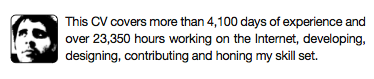
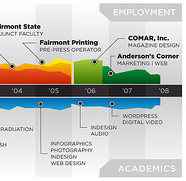

“Have gun, will travel” is the mark of someone who is ready for anything and looking for adventure. It was popularized when used as the title of a 1950s TV series and has since been snowcloned many times over. If you are the type of person who’s entire advertisement for themself can be summed-up in four short words, you are either incredibly arrogant or really good, or both.
There are very few of us who can actually get away with such short advertisements. John Nash was once written a letter of recommendation for graduate school which simply read, “This man is a genius”. It was true, he went on to win a Nobel Prize in Economics and started what is modern day game theory. We’re not John Nash, so most of us require something a little more substantial and traditional.
CV, Curriculum Vitæ, Curriculum Vitae, Resume, Résumé, Resumé, what’s the point?
There is no single way to make an impressive CV, the fact that it goes by so many different names and spellings should be your first clue into the diversity of this document. Obviously, there are some standard items which need to be included and excluded, but overall there is plenty of leeway when writing the actual document.
This article isn’t about layout or the design of a great CV, it’s more about why it’s important to have one and keep it current no matter your work situation.
When designing and writing your CV, if you try a new approach that represents you and you don’t get hired, don’t blame yourself or your CV. If your CV reflects the environment in which you want to work and you don’t get the job, maybe they were not the right employer. It’s OK to be creative on your CV no matter the field of work. I’ve seen plenty of good and boring CVs in my day and no matter how boring the job description, the enthusiastic creative people at least make it into the interview pile.
In my career, I’ve been lucky enough not to depend on a CV. Most of the work I have found has been via friends’ and contacts’ recommendations, but that may not apply to you or even to me in the future. So it’s important to keep this in mind: what will get you that next interview and ultimately your next job?
In an interview everyone is nervous. When a potential employer is interviewing you, they want that physical paper CV in front of them. There are several reasons for this, firstly as an anchor. They can use it to ask follow-up questions. Unfortunately, more times than not, the first time they’ve looked at your CV is during or right before the interview. So having it in front of them makes it easy to get the answers. Don’t make the type so small you need a magnifying glass to read it. Secondly, having a sheet of paper gives the interviewer the ability to literally hide behind it. Having something in hand makes them feel less naked. Remember, they are just as nervous as you. They are committing loads of resources and money into hiring the right person. They have just as high a stake in making the right decision as you do.
Life of a CV Post Employment
Even if you have a job, it is important to keep your CV current. This might seem oxymoronic, but it’s important. Keeping your CV current isn’t meant so that you’re always ready for that next job, but rather keeping your CV current allows for you to better describe your job situation and have an up-to-date document when clients request it.
I have been working in various companies that require print outs of CVs when attempting to win project bids. The client wants to know who is on the team and their levels of expertise when selecting a winner from their pile of proposals. Not only request for proposals (RFP), but potential investors and grants also require CVs of team members.
Rather than cramming last minute to prepare, CVs should be “living documents”. Every 6–12 months, if not sooner, they should be reviewed. Job descriptions change rapidly, so having something current on paper is always helpful. Reviewing your CV regularly allows you to spot issues, realize that word you were using to describe the job 2 years ago are now over-used buzzword which are just a hollow shells without any meaning. How embarrassing would it be if you walked into an interview with “Web Master” plastered all over your work experience or even worse, “Social Media Expert”.
Can you remember what you did at your second job? If you documented your responsibilities and tasks while you were employed at that job you are more likely to write down more points and the points be of better quality. If you constantly review your own CV, then it makes it easier to keep notes rather than try to remember what you did or didn’t do on a daily basis a several years ago.
Having read plenty of CVs for potentially employees and co-workers. No matter how sexy, crazy or eye catching the layout is, you still need the basic requirements. The design and layout just gets you moved from the “can’t be bothered” pile, to the “read later” pile. I remember, years ago, a sports coach telling me that he can teach skills, but he can’t teach speed. Even if you don’t have the exact skills to do the job, you can learn. The more difficult aspect is if you will fit in with the team. So there are some basic requirements to a CV, but fancy letters behind your name aren’t always a guarantee! I’ve had enthusiastic fresh college grads in the same pile as experienced workers. In many cases we passed over the experienced workers in favour of the college grads for positions. So never count yourself out based on your skill set, that can be taught.
Ditch the Objectives
One aspect of a CV that was drilled into me was to have a simple “Objectives” section. For the longest time, mine simply read “Looking for a full-time position in the web development field that allows me to be challenged …”. This is just an honest, open list of requirements from you. Listing the duration, time period, expected duties and responsibilities of the position you are applying for.
I am happily employed, so this section of my CV seemed redundant. I am NOT looking for full-time work. Rather than drop this opening paragraph, I changed its focus.
The new opening of my CV reflects my overall experience and expertise in a short sentence. This is key when you are looking for funding or to prove you are the right company to handle the task. (I tried this in the style of a Tweet or Facebook status message. Which is a perfect example of why you need to revisit CVs every few months. This might be completely cliché and passé sooner than later.) Malcolm Gladwell’s book Outliers, estimates that you need about 10,000 hours of work to become an expert. I looked at the earliest job listed on my CV which dealt with web technologies. It was from 01998. I then worked out how many weeks it has been from then til now, it was over 500. Multiply that by 40 hours a week and you get roughly how many working hours I have been contributing to my field of expertise. Now, that’s not 100% true, you’d have to remove a few weeks here and there for vacations, etc. But as a rough metric for hours worked, it’s a good one. Then it hinges on if you believe the law of 10,000 hour for expertise. This is yet another reason why it is important to review your CV every 6–12 months. This theory might be completely debunked and you might still be promoting yourself under out-dated, ill-conceived concepts. This reflects badly on you. Why would I hire someone still clinging to last year’s paradigms?
As I was putting my revised CV together, this new audience caused me to realized that it is time to change the goal of this document. CVs tend to be boring formulaic lists of achievements and activities. While these are important, as an employer once you’ve seen one list, you’ve seen them all!
I wanted to make my CV more like a narrative story. A strong opening, the meaty details and a logical closing. Think of it sort of like a who dunit, murder mystery novel. Tell them a story and leave them “turning the page”. With someone’s CV, I want to hire them just so I can read the next chapter.
Notable CVs
There are a few examples of notable CVs out there. One design by Michael Anderson was done in the style of an infographic. It is well executed for someone wanting a position in design, but he does use a doughnut graph! Overall, it is an excellent based for others to pull from. Another great example is by Matthew Huebert. He managed to create a small timeline of his education and work experience. Matthew Huebert is unique in that his experience spans atleast 3-4 continents, so on the timeline several points are labelled to the corresponding country on the small inset map. Not everyone can benefit from the map feature, but the timeline is interesting. It might demonstrate the back and forth between work and education or show long stretches at companies over the years. It helps to visualize and put into context events on the world stage with personal events.
Finally, the last life lesson learnt about CVs is to try to make them as short as possible. I tend to keep it at one page, no more. I let some older achievements roll out, or selectively add/replace them depending on the audience. A friend of mine printed his two page CV front and back on a single sheet of paper. The temp agency didn’t think he was qualified. During the interview he flipped the paper over to show the second half of his CV. They had never seen it. Double-sided printing is still the domain of the computer literati. Rule #1 is: if you have two pages, staple it. Rule #2 is: if you have to staple it, you have too many pages.
Having a CV fresh and up-to-date saves time when you least have it. CV up-keep is sort of like insurance, no one pays it if they aren’t told to do so, yet when the crunch hits, everyone’s glad they squirreled something away when they could. Next time you have a deadline, remember the last thing you want to be doing instead of coding is revising a boring old CV which could be your ticket to investment and success.